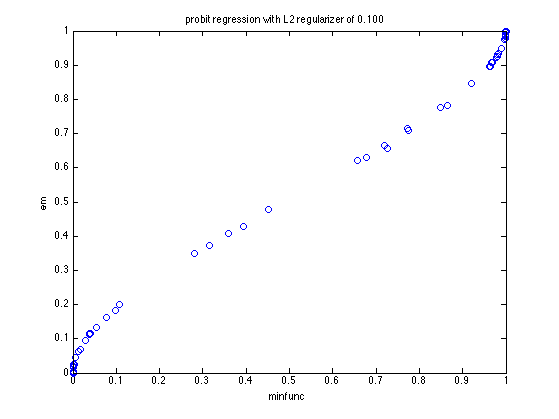
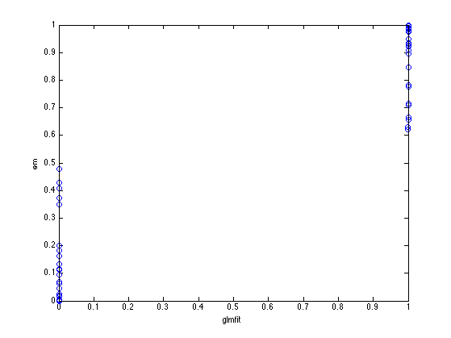
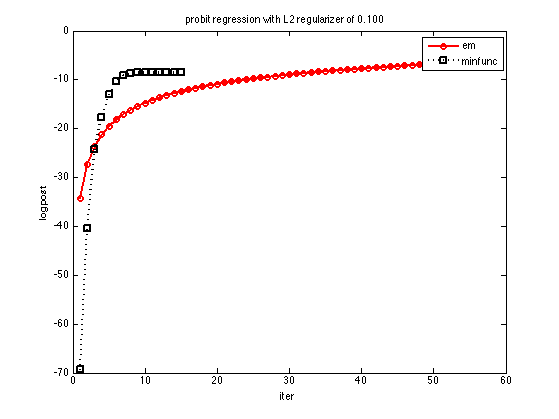

Probit Regression Demo
setSeed(0);
N = 100; D = 2;
X = randn(N,D);
w = randn(D,1);
p = 0;
y01 = flipBits(double((X*w>0)), p);
ypm1 = sign(y01-0.5);
if statsToolboxInstalled
wGlm = glmfit(X,y01,'binomial','link','probit','constant','on');
N = size(X,1);
probGlm = gausscdf([ones(N,1) X]*wGlm);
end
lambda = 1e-1;
[modelMinfunc, objTraceMinfunc] = probitRegFit(X, ypm1, 'lambda', lambda, 'method', 'minfunc');
[yhatMinfunc, probMinfunc] = probitRegPredict(modelMinfunc, X);
[modelEm, objTraceEm] = probitRegFit(X, ypm1, 'lambda', lambda, 'method', 'em');
[yhatEm, probEm] = probitRegPredict(modelEm, X);
figure;plot(probMinfunc, probEm, 'o')
xlabel('minfunc'); ylabel('em');
title(sprintf('probit regression with L2 regularizer of %5.3f', lambda))
if statsToolboxInstalled
figure;plot(probGlm, probEm, 'o')
xlabel('glmfit'); ylabel('em');
end
figure;
plot(objTraceEm, 'r-o', 'linewidth', 2);
hold on
plot(objTraceMinfunc, 'k:s', 'linewidth', 2);
legend('em', 'minfunc')
title(sprintf('probit regression with L2 regularizer of %5.3f', lambda))
ylabel('logpost')
xlabel('iter')
printPmtkFigure('probitRegDemoNLL')
  